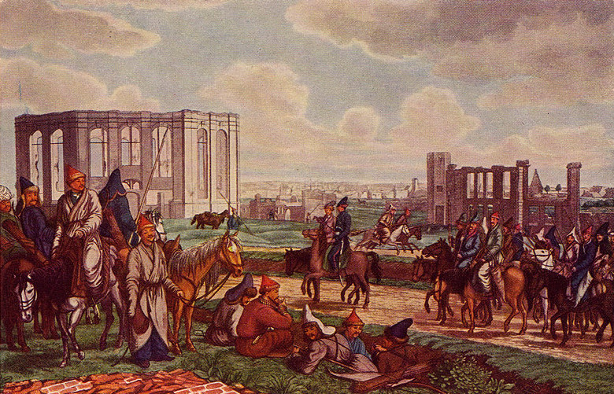
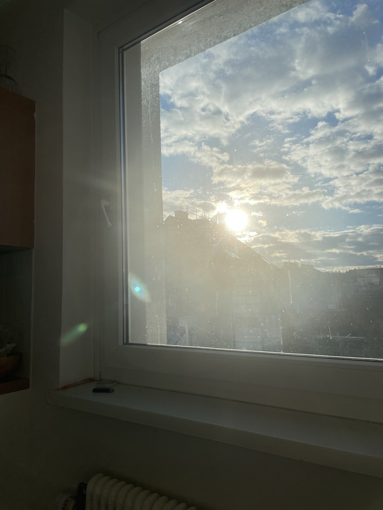

Hung up on my baby
Breakfast with a twist
New world,
New way of
breathing
indoor sandals,
pepper chips
Doorbell chimes and
tender huddles:
(relax,
forget the facts, stop breathing
patter faster)
Classical strategies
work over and
over again
Confidence man
I will be
Nothing more than human matter
Nothing
Else than here and when
Dead simple still
As if there’s more unshuttled matter
Between the here and will
We passed ourselves
Coming home from the movies
Eating popcorn in the rain
Mcarthur park,
The prater,
Dupont circle,
We declared today a holiday for cake. Dedication of
Blue bikes
And a can of baby paint
With a sign that somehow tells you
If you lived here you’d be home now
But you ain’t
Bashkirs in hamburg
File:Башкиры в Гамбурге, 1814.jpg

we’re gonna skate to one song …
And one song only
Anthemetizes Bashkortostan (just not this one —
& not the one
whose melody just
they used to sung,
when life
may have not
become better…)
Nomad nation!
You can roll in with your crew
you can make em shake your hand,
yet even if you’re by the sea
you’re still a bashkir
by the sea
New Lives in the City
[a poem about the taliban after the revolution]
View from my kitchen table

Dancing around the table / Bobby’s gotta bereal
(chorus)
we dance around the table while we eat
sing please keep us protected from disease
i cook some food for you,
you cook for me
(verse1)
the last antelope
in alaska
died there
on pangea
and we know that certain mountains
were once reefs
(verse2)
we sing of glaciers melting
and of rustles in the leaves
you dig us out
of some uncertain trap,
but we don’t leave
the last firefly in kansas
isn’t already born
but they’re growing different crops now [there]
and they taste different to me
we dance around the table while we eat
sing please keep us protected from disease
i cook some food for you,
you cook for me
you cook for me
BOBBY GOTTA BEREAL
Bobby’s got a be real
And he’s posting lots of pics
Bobby’s gotta be real
And his outfit’s looking sick
Sarah’s gotta patreon
And she likes to post her tits
Your uncle, charlie, david,
They’re liking all her shit!
Me I promote
positivity
and taking off my clothes
i work out a lot, you know
and it shows
I love my life
You should like and subscribe
To my life
(I Promote positivity)
Oh yeah
I gotta wife
My wife and me got problems
But we keep em to ourselves
We cook our meals together
and put our books back up on our shelves
And if you’re lonely, desparate,
Or just plum outta luck
You can pay $4.99
And watch us fuck
i love my wife
you should like and subscribe
to our life
Keys anxiety / gas station dinner
[a poem about taking walks]
2 weezer songs
THE ORKHON INSCRIPTIONS

I taste just like candy
Foxy brown - candy
Outkast prototype (outro)
You ever eat a skittle?
Plato said ideal forms are more real than their physical copies in our material world
Meaning that for plato, becoming is something like decaying
And any cultural representation of natural beauty is doubly doomed ,
A copy of a copy
For this reason poets were banned from his ideal city
One of the issues here is that our minds are incapable of trusting
Really trusting
The senses that our body uses to interact with its environment
In that process we usually call “life”
Sometimes this problem is known as mind body dualism
And it pops up in many correlated areas
Such as the fact that there are likely people
Who have never tasted a watermelon
But who eat starburst or other fruity candies
All the time
If these one of these people were ever to spit the seeds of a watermelon,
Or peel the skin of an orange,
They may find the sensation
Disgusting
And even dangerous
In other words,
though we know the natural world is there,
We often experience it as a kind of simulation
Which curiously seems more real , even comfier to us
Than its genuine source
Baudriallrd and others have explored the implications of this
As well as many hollywood movies such as the matrix or Jim carey.
But what does this mean for art,
For our aesthetic representations
Of the natural world?
After all it’s the 90s
When I grew up it was the 90s but also the 70s,
Now it’s the 90s again or even the early 2000s
So You could also say that there is a temporal dimension to this phenomenon
In which we feel ourselves trapped
In an endless recapitulation - with a twist - of a misremembered past
which maybe never even existed
The way we collectively experience it
Through the complex matrix of
Capital‘S industrial content propagation machine
which Theodor adorno and Max horkheimer once called
The culture industry
(
This is George Clinton speaking
Reminding you to
Keep it funky)
Mysteriously,
The body often seems to “understand” music
Before the mind does
Through we have been able to systematize and describe
Nearly every aspect of music
Using linguistic and other signs
For centuries
And yet
There is no equation
Which can describe
The way it feels
To dance
With
Norman rockwell
Or sulieman the magnificent
During an après-Ski
event at karl lagerfeld’s
Packed-out
Alpine demense
in kitzbühel!
This is one reason why a common strategy for artistic production Today
Is to chop up and reassimilate
Incongruous pieces of our mythical symbolic past
Into a tidy or sloppy package
And call it a day,
Since people have reported that experiencing this disjunctiveness
As it is frozen in aesthetic form
Can be
Exhilarating
But maybe this strategy ultimately
Only serves to disorient us more
And remove us even further from material existence
Which is why the task I am suggesting we should set art to
Is to bring us back into our bodies
The body after all
Is where sensual liberation
And lots of other juicy stuff
Can happen
And I like that
Cause it’s real smooth
And sexy